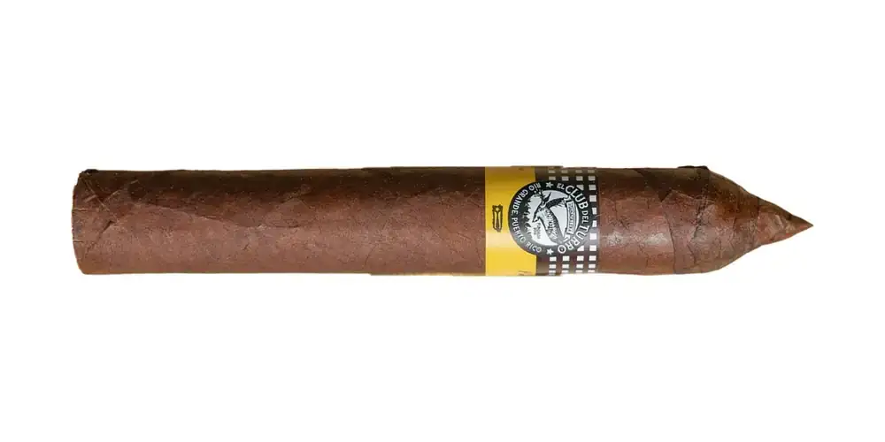

Deja el Drama
De El Club del Turro · Río Grande, Puerto Rico
Tripa de Puerto Rico y República Dominicana. Notas dulces de chocolate y frutas frescas. Suave a media.
- Capa: Nicaragua (capote Habano)
- Fortaleza: Suave
- Vitolas: Robusto 5 x 50
Fuentes: 1
Ver Deja el Drama en la app, califícalo y guárdalo en Mi Hoja.